Ra2map：本文转载自贴吧【红警地图美化细化基础教程】By:0402yjl，原帖作者：零肆酱
本教程仅为新手美化地图提供参考，若有错误请指出，谢谢
1目录：23楼——一些废话34楼——平地地表美化45楼——丘陵及悬崖地表美化56楼——水面美化67楼——综合美化78楼——利用触发美化89楼——其他补充9【城市地形及地表美化请参考格林·斯内克的教程，月球地形及地表美化请参考※杯具的新手※的教程】10【由于温和、雪地和沙漠的美化大同小异，在此仅用温和气候来做示范】11【其他教程请参考红警地图吧置顶】
【一些废话】
想写个野外地图地表美化的教程已经很久了，之前看见各位新人虽然地图可玩性高，产量高，可是地表美化方面依旧不够精细。于是乎，就有了现在这个教程，希望各位能因为我的一些经验，来让自己的美化技术变得更好吧。
下面开始→_→
【平地地表美化】
1.
大家有没有注意到这个？其实本教程最主要的就是对于”Shift“键的”连续绘制“的运用。运用”Shift“键可以更方便的画出一片形状更为不规则的地表。
2.选择一种地表后，用”Shift“刷出来这种效果。

3.

之后选择另外的地表，继续用”Shift“刷，不过要注意的是，千万不要刷出来较直的一条线，或者刷出一大片的地表，如下图：

这样的地表看起来会非常不和谐，补救方法就是接着使用”Shift“键，使各种地表看起来尽量零碎些。
4.平地美化基本就是这些，其他关于树木，岩石的美化我记得也有教程，不过在这里就先略过啦，只提两个建议：树木不要太过分散，也不要都挤在一起。树木下面尽量使用暗色草地/雪地草地等地表美化。
【丘陵及悬崖地表美化】
1.首先是悬崖教程，不学会做悬崖，怎么学悬崖美化？
CJD的悬崖教程：http://tieba.baidu.com/p/506985930
CJD的地图常见错误：http://tieba.baidu.com/p/657117454
Z1861的悬崖制作技巧：http://tieba.baidu.com/p/1191654389
2.下面开始谈丘陵及悬崖的美化，以温和气候为例，丘陵及悬崖的最好搭档是【碎石草地】和【暗色草地】，这两种地表和高低起伏的丘陵，悬崖搭配起来会比较和谐。
3.以这个悬崖为例。

4.

首先，我用【碎石草地】美化悬崖，注意随时打开框架模式查看，不要把地表放到悬崖上去。如下图：

打开框架模式后，悬崖会变成这个样子：
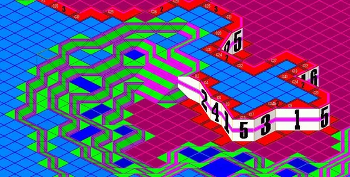
【在这里要注意，看见斜坡中间那些单独的地形块了吗？一定不要忘了它们，也加些地表在它们上面吧。】【框架模式可以帮你找出悬崖及斜坡的错误。】
5.加上些【暗色草地】吧，之后就会变成这个样子。
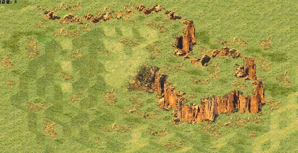
注：悬崖及丘陵若使用上面的"Shift"键，就会很容易造成地形bug，所以在这里我建议一块一块的画地表。
6.丘陵便是由斜坡构成的地形，框架模式下是这样的。
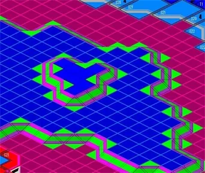
这是美化过的丘陵，美化方式基本与悬崖相同。

7.下面是一些美化过的悬崖及丘陵图片，仅供参考：
 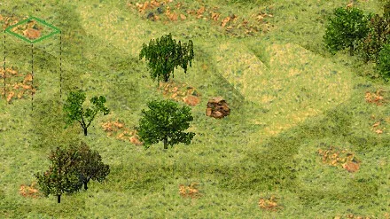
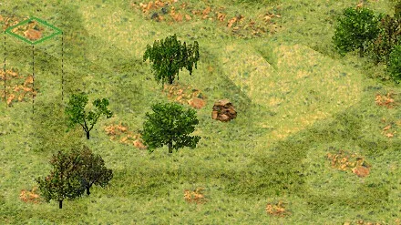
8.总而言之，丘陵悬崖的美化最重要的就是细心，没有细心是出不了一幅好地图的。
【水面美化】
1.说到水面美化，就不得不提一下海岸的美化。

如本图，沙滩切记不可以用方方正正的草地美化，而要用沙地进行过渡。
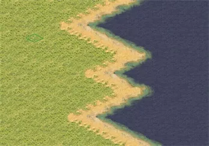
这种方方正正的海滩现实中不会有的。
2.不知道大家有没有注意在地形/地表中【0012 水岸】中的这两个地表，熟练的运用它俩美化海岸是很不错的。
 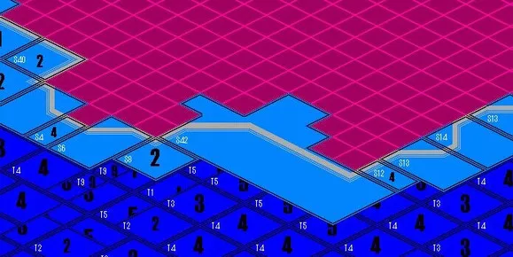
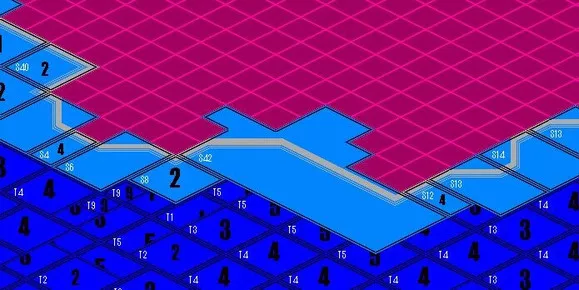
由于这两种海岸比较容易出现bug，所以建议开启框架模式。看见海岸的灰线了吗？一定要让它们连在一起，不然就会出现bug。
做好之后，就是下图的模样：

3.接下来就是水面的美化，水面推荐自己画，如果使用”Ctrl“键的填充模式，会变得很丑，详见原版盟军任务第十二关的水域。


给你一片水面后，先放些礁石，礁石在地形/地表中的【0021 水面】里。
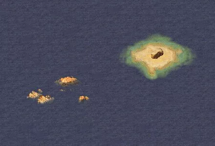
然后可以用【沙地】地表画些小岛。小岛上可以放些石头或者树木。

还可以在水中做几个悬崖。
4.水面美化就是这些，算是美化中最简单的了，不过水面也是个及其容易出现bug的地方，如果出现bug，及时撤销，不要留下任何一个bug。
【综合美化】
综合美化又是什么呢，综合美化可以简单理解为把上述所有的美化结合到一起，还可以加上小路、农田、水路和瀑布等多种地形元素。那么怎么结合才会看起来比较和谐呢？
下面举几个例子：
 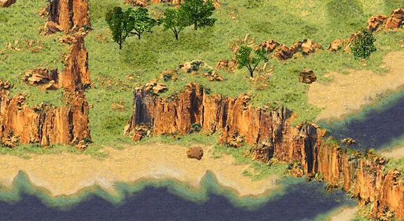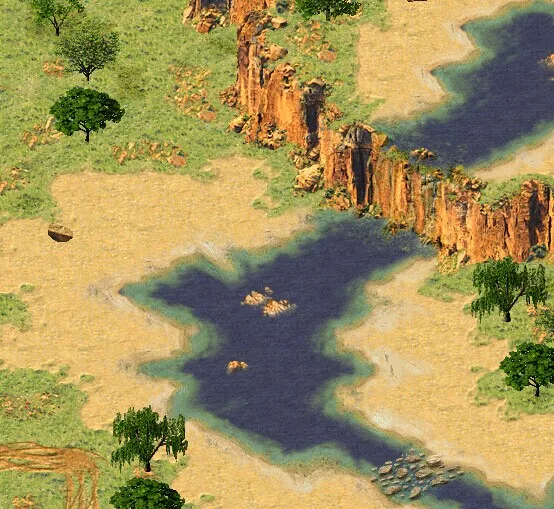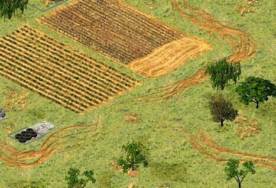
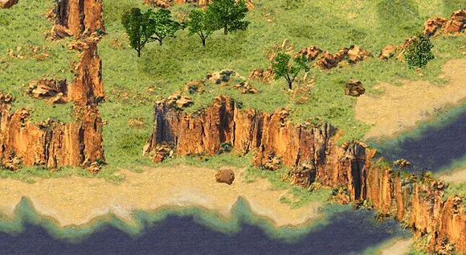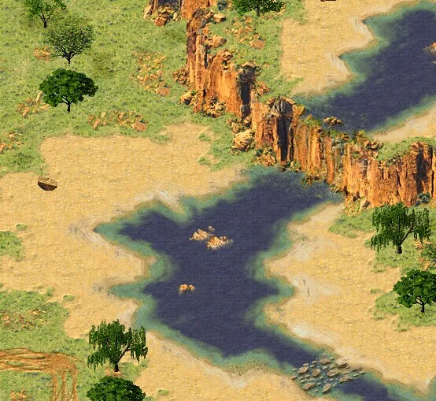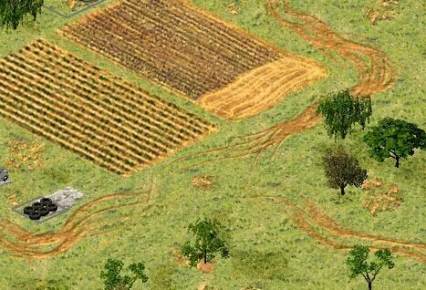
综合美化时，一定要注意细节。如第一张图悬崖下草地的细节，第三张图的水桥【水桥注意事项：http://tieba.baidu.com/p/657117454】，还有第四张的小路【小路制作一定要有耐心，对于一幅野外图来说，小路往往是很耗时的。】
总之综合美化也是个挺笼统的概念，不过只要这幅图你看的舒服，没有bug，并且你觉得你画的地形也算是个旅游景区（大雾），就可以了，相信你做的也是一幅很棒的地图。
【利用触发美化】
1.音效触发：
在这里我推荐一种比较简单的音效触发，比较省时间，而且很好弄。
a.设置路径点，在你的地图上（推荐全部做完之后设置）找出你想发出声音的地方（风声、水声、鸟鸣等等），然后设置路径点，注意0~7号路径点在遭遇战中是玩家位置，切记路径点要从8号开始设置。 b.建立一个触发，名称随意，如下图：
c.事件选择51 随机延时… ，参数值一般写60，如下图：

d.行为选择98 播放音效(随机)… ，下面的参数值就是在随机路径点将触发的音效，详细内容参考本楼最后。行为推荐新建几个，选择不同的声音参数，这样可以减少工作量，如下图：
e.之后就可以进游戏检查一下了。
2.光照触发：
由于这个04不怎么用，所以请参考http://tieba.baidu.com/p/1456094724
3.闪电风暴/粒子动画：
这两种触发不太常用，如果想了解可以在本贴内留言或加04的QQ。
【常用的Amb声音整理，来自于网络，貌似是阿克苏整理的？】
xxxxxxxxxx401_Amb_UrbanMurmur12连续而低沉的城市声音？3_Amb_UrbanMurmur24同上5_Amb_OceanHeavy6大海的声音7_Amb_BirdsHarbor8海鸟（大概是吧……港口鸟……）的声音9_Amb_Traffic10繁忙的交通声11_Amb_WindCold12冷风吹的声音13_Amb_OceanLight14恕我无能……15_Amb_WindPlains16平原上的风的声音17_Amb_BirdsPark18鸟公园……大概是很多鸟的意思……19_Amb_BirdsTemperate120温带鸟的声音21_Amb_BirdsTemperate222同上23_Amb_BirdsJungle124丛林鸟的声音25_Amb_BirdsJungle226同上27_Amb_CricketChirps28蟋蟀等虫的叫声29_Amb_CricketBed30估计和鸟公园差不多……很多虫的叫声……31_Amb_CricketBed32潺潺的河流声33_Amb_BirdsNightOwl34猫头鹰(？大雾)的叫声35_Amb_BirdsBeach36海滩鸟的叫声……37_Amb_WavesLake38湖的波涛声39_Amb_BirdsMorning40早上的鸟叫声
【其他补充】
04暂时没什么想到的了，这楼留着备用吧，顺便送上一些美化地表的视频和图文教程，仅供各位参考：
※杯具的新手※：【视频】美化月球地表和温和地表http://tieba.baidu.com/p/2167369286
【视频】美化雪地地表 http://tieba.baidu.com/p/2191134697
格林·斯内克：【再也见不到如此标准的技术贴了】某斯内克的城市图经验谈..... http://tieba.baidu.com/p/2478145620
【顺便说一句：新手请务必把地图编辑器从里到外翻一遍，再把红警地图吧的置顶看一遍再去问其他地图大神问题，不然他们说的东西你都可能不知道是什么】。
作者网盘（内有作者的地图及其他著名mapper的网盘链接）：http://0402yjl.ys168.com/
若红警之家等网站需要转载，请务必署名，否则将视为侵权